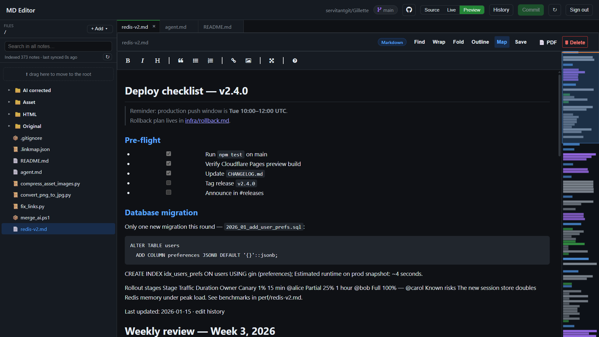

Drop to add an image to the file
Markdown-first workspace for any GitHub repo — live preview, multi-tab editing, autosave and full-text search. No local clone, no build step, no tokens to paste.

screenshots/hero.png here
Code-first. No markdown live preview, no PDF export, no drafts, no link rewriting on move.
Desktop app with manual Git sync. Zero-install here, runs on any device with a browser.
No multi-file commits, no conflict recovery, no file tree ops, no link rewriting.
Proprietary format, lock-in, no git history. Here docs
are plain .md files — forever yours.
Server never stores your token. Token lives only in this
tab's sessionStorage, destroyed on close.
Yes. Same OAuth grants access to any repo you permit. Previews work on private repos too.
Edits land in IndexedDB within 400 ms. Reconnect and pick keep-or-discard — nothing merges automatically.
Yes — Cloudflare Pages free tier. Callback is Pages
Functions. See README-CLOUDFLARE.md.
Export to markdown, push to a GitHub repo, open it here — plain files with full git history.